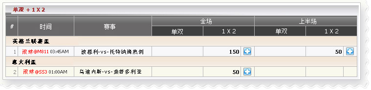

单双 + 1 X 2
定义:
查看代理赢输根据占成注单投注种类之单双/ 1x2/ 上半场或全场.

单双 + 1 X 2
- 以英格兰联赛盃，member01 投注于 波恩利-vs-托特纳姆热刺以下细节:
- 第一注单: 金额=300, 赔率=3.13, 选择= 1x2 ,全场, 代理占成= 50% --> 代理占成= 300* 50% = 150
- 第二注单: 金额=100, 赔率=2.5, 选择= 1x2 ,全场, 代理占成= 50% --> 代理占成= 100* 50% = 50
- 以意大利盃，member01 投注于乌迪内斯-vs- 桑普多利亚以下细节:
- 第一注单: 金额=100, 赔率=2.3, 选择= 1x2 ,全场, 代理占成= 50% --> 代理占成= 100* 50% = 50